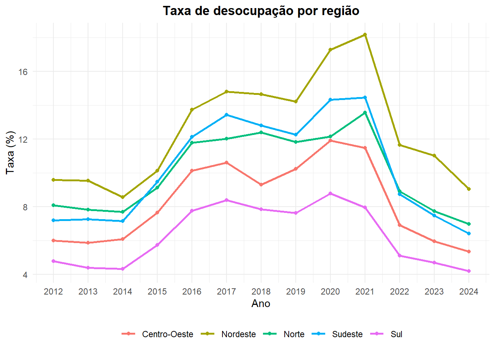
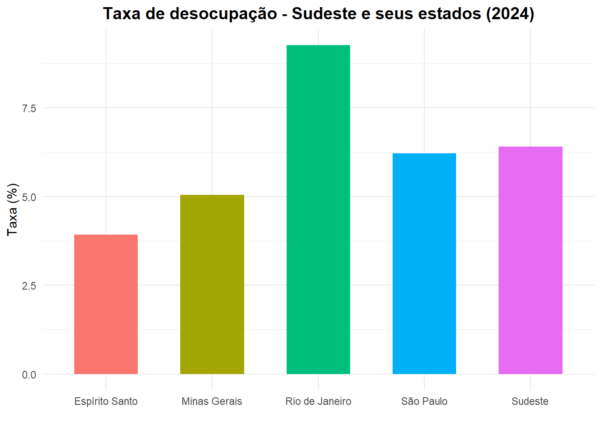

library(arrow)## Warning: pacote 'arrow' foi compilado no R versão 4.4.3##
## Anexando pacote: 'arrow'## O seguinte objeto é mascarado por 'package:utils':
##
## timestamplibrary(readxl)
library(tidyverse)## ── Attaching core tidyverse packages ──────────────────────── tidyverse 2.0.0 ──
## ✔ dplyr 1.1.4 ✔ readr 2.1.5
## ✔ forcats 1.0.0 ✔ stringr 1.5.1
## ✔ ggplot2 3.5.1 ✔ tibble 3.2.1
## ✔ lubridate 1.9.4 ✔ tidyr 1.3.1
## ✔ purrr 1.0.2## ── Conflicts ────────────────────────────────────────── tidyverse_conflicts() ──
## ✖ lubridate::duration() masks arrow::duration()
## ✖ dplyr::filter() masks stats::filter()
## ✖ dplyr::lag() masks stats::lag()
## ℹ Use the conflicted package (<http://conflicted.r-lib.org/>) to force all conflicts to become errorslibrary(readr)
library(purrr)
library(ggplot2)
library(here)## here() starts at C:/Users/Victor/Documents/GitHub/Victor_Sande_Introducao_ao_R_2025.2_A1treat_pnad <- function(path, input_path,
dictionary_path, output_path, tipo_pnad, db) {
library(magrittr)
dic_correction <- readr::read_table(
input_path,
col_names = FALSE,
skip = 10
) %>%
dplyr::filter(stringr::str_starts(stringr::str_trim(X1), "@")) %>%
dplyr::mutate(
type = ifelse(substr(X3, 1, 1) == "$", TRUE, FALSE),
start = stringr::str_replace_all(X1, "@", "") %>% as.numeric(),
X3 = as.integer(chartr("$", " ", X3)),
end = start + X3 - 1,
X2 = stringr::str_to_upper(X2),
divisor = 1
) %>%
dplyr::select(varname = X2, width = X3, char = type, divisor, start, end)
PNADc <- readr::read_fwf(
path,
readr::fwf_positions(
dic_correction$start,
dic_correction$end, dic_correction$varname)) %>%
dplyr::mutate(
REGIAO = trunc(as.numeric(UF) / 10, 0),
PAIS = 0
)
PNADc %>%
arrow::write_parquet(.,output_path)}Tratando as PNADs
#treat_pnad(
# path = "pnadc/dados/input/visita_5/2021/PNADC_2021_visita5.txt",
# input_path = "pnadc/dados/input/visita_5/2021/input_PNADC_2021_visita5.txt",
# dictionary_path = "pnadc/dados/input/visita_5/2021/dicionario_PNADC_microdados_2021_visita5.xls",
# output_path = "pnadc/dados/output/pnadc_vis1_trat/pnadc_anual_2021.parquet",
# tipo_pnad = "anual",
# db = NULL
#)Nota: como as PNADs são muito grandes, não consegui rodar todas de uma vez. é preciso alterar os argumentos da função para cada edição da PNAD, de acordo com o seu caminho.
Agora, é possível calcular a taxa de desocupação. Antes, precisa importar os arquivos lidos:
dir_parq <- here("pnadc","dados","output","pnadc_vis1_trat")
arquivos <- list.files(dir_parq, pattern="\\.parquet$", full.names=TRUE)
nomes <- basename(arquivos) |> str_remove("\\.parquet$")
purrr::iwalk(arquivos, ~{
obj <- read_parquet(.x, col_select = c("ANO","TRIMESTRE","UF","V1032","VD4002"))
assign(nomes[.y], obj, envir = .GlobalEnv)
})Partindo para o cálculo:
#Variável de interesse: VD4002 (já selecionada)
walk(nomes, ~ {
df <- get(.x) %>%
rename(peso = V1032,
sit = VD4002) %>%
filter(!is.na(sit)) %>%
mutate(ocup = sit == 1)
novo_nome <- gsub("pnadc_anual_", "pnadc_step1_", .x)
assign(novo_nome, df, envir = .GlobalEnv)
})
novos_nomes <- ls(pattern = "^pnadc_step1_\\d{4}$")
#=====================
#Cálculo Para UFS ----
#=====================
walk(novos_nomes, ~ {
df <- get(.x) %>%
mutate(peso = as.numeric(peso)) %>%
group_by(UF) %>%
mutate(
soma_ocup = sum(if_else(ocup == TRUE, peso, 0)),
soma_desocup = sum(if_else(ocup == FALSE, peso, 0)),
total = soma_ocup + soma_desocup
) %>%
mutate(tx_desocup = soma_desocup / total) %>%
ungroup() %>%
distinct(UF, .keep_all = TRUE)
novo_nome <- gsub("pnadc_step1_", "pnadc_ufs_", .x)
assign(novo_nome, df, envir = .GlobalEnv)
})
#===========================================
#Cálculo para Regiões, a partir das UFs ----
#===========================================
novos_nomes_2 <- ls(pattern = "^pnadc_ufs_\\d{4}$")
walk(novos_nomes_2, ~ {
df <- get(.x) %>%
mutate(
UF = substr(as.character(UF), 1, 1)
) %>%
group_by(UF, ANO) %>%
mutate(
soma_ocup = sum(soma_ocup, na.rm = TRUE),
soma_desocup = sum(soma_desocup, na.rm = TRUE),
total = soma_ocup + soma_desocup
) %>%
mutate(tx_desocup = soma_desocup / total) %>%
ungroup() %>%
distinct(UF, .keep_all = TRUE)
novo_nome <- gsub("pnadc_ufs_", "pnadc_reg_", .x)
assign(novo_nome, df, envir = .GlobalEnv)
})
#=======================
#Cálculo pro Brasil ----
#=======================
novos_nomes_3 <- ls(pattern = "^pnadc_reg_\\d{4}$")
walk(novos_nomes_3, ~ {
df <- get(.x) %>%
mutate(UF = "0") %>%
mutate(
soma_ocup = sum(soma_ocup, na.rm = TRUE),
soma_desocup = sum(soma_desocup, na.rm = TRUE),
total = soma_ocup + soma_desocup
) %>%
mutate(tx_desocup = soma_desocup / total) %>%
distinct(UF, .keep_all = TRUE)
novo_nome <- gsub("pnadc_reg_", "pnadc_br_", .x)
assign(novo_nome, df, envir = .GlobalEnv)
})Juntando todos os anos e juntando em um df final:
anos <- ls(pattern = "^pnadc_br_\\d{4}$") %>%
str_extract("\\d{4}") %>%
sort()
walk(anos, ~ {
df_ufs <- get(paste0("pnadc_ufs_", .x)) %>%
mutate(UF = as.numeric(UF))
df_reg <- get(paste0("pnadc_reg_", .x)) %>%
mutate(UF = as.numeric(UF))
df_br <- get(paste0("pnadc_br_", .x)) %>%
mutate(UF = as.numeric(UF))
df_final <- bind_rows(df_ufs, df_reg, df_br) %>%
arrange(UF)
assign(paste0("pnadc_total_", .x), df_final, envir = .GlobalEnv)
})
nomes_totais <- ls(pattern = "^pnadc_total_\\d{4}$")
pnadc_total <- map_dfr(nomes_totais, ~ {
df <- get(.x)
ano <- str_extract(.x, "\\d{4}")
df$ano <- as.integer(ano)
df <- df
}) %>%
arrange(UF) %>%
ungroup()
pnadc_total <- pnadc_total %>%
select(ano, UF, soma_ocup, soma_desocup, total, tx_desocup) %>%
mutate(tx_desocup = tx_desocup * 100) %>%
rename(codigo = UF)Tabela auxiliar (relação código-nome):
tab_aux <- read_xlsx(
here("pnadc", "dados", "input", "tab_aux", "tabela_aux_codigo_nome.xlsx")
)
pnadc_total_join <- pnadc_total %>%
left_join(tab_aux, by = "codigo")
pnadc_total_rename <- pnadc_total_join %>%
rename(nome_UF = nome,
codigo_UF = codigo) %>%
select(ano, codigo_UF, nome_UF, soma_ocup, soma_desocup, total, tx_desocup) Gerando um csv com o arquivo finalizado:
write.csv(
pnadc_total_rename,
here::here("pnadc", "dados", "output", "perc_pnadc_desocupacao.csv"),
fileEncoding = "UTF-8",
row.names = FALSE
)Antes, recomendaria limpar o diretório e importar o arquivo gerado para não sobrecarregar a memória.
df <- read.csv(
here("pnadc", "dados", "output", "perc_pnadc_desocupacao.csv")
)dfreg <- df %>%
filter(codigo_UF > 0 & codigo_UF < 10)
ggplot(dfreg, aes(x = ano, y = tx_desocup, color = nome_UF, group = nome_UF)) +
geom_line(size = 1) +
geom_point() +
scale_x_continuous(breaks = seq(min(df$ano), max(df$ano), by = 1)) +
labs(
title = "Taxa de desocupação por região",
x = "Ano",
y = "Taxa (%)",
color = NULL
) +
theme_minimal() +
theme(
plot.title = element_text(hjust = 0.5, face = "bold"),
legend.position = "bottom"
)## Warning: Using `size` aesthetic for lines was deprecated in ggplot2 3.4.0.
## ℹ Please use `linewidth` instead.
## This warning is displayed once every 8 hours.
## Call `lifecycle::last_lifecycle_warnings()` to see where this warning was
## generated.
É possível ver que o Nordeste concentra, historicamente, sempre a maior taxa de desocupação; enquanto o Sul, a região com menor taxa de desocupação. Como possível melhoria para o trabalho, poderia-se fazer uma análise com indicadores socioeconômicos, tais como o PIB per capita, a produtividade do trabalho etc, avaliando melhor as divergências desses recortes.
dfsudeste <- df %>%
filter(codigo_UF > 30 & codigo_UF < 40 | codigo_UF == 3,
ano == 2024)
ggplot(dfsudeste, aes(x = nome_UF, y = tx_desocup, fill = nome_UF)) +
geom_col(width = 0.6) +
labs(
title = "Taxa de desocupação - Sudeste e seus estados (2024)",
x = "",
y = "Taxa (%)",
fill = NULL
) +
theme_minimal() +
theme(
plot.title = element_text(hjust = 0.5, size = 14, face = "bold"),
legend.position = "none"
)
Embora tenha optado por avaliar somente o ano de 2024, o gráfico mostra que Rio de Janeiro está bem acima dos demais. Isso pode representar uma dificuldade na recuperação da crise do Covid-2019, ou estar em linha com a série histórica da taxa.
A base de dados utilizada foi a PNAD-C, através de seus microdados da visita 1 – com exceção dos anos 2020 e 2021, que o módulo para o cálculo da taxa de desemprego foi concentrado na visita 5. Link direto para acessar a PNAD-C: https://ftp.ibge.gov.br/Trabalho_e_Rendimento/Pesquisa_Nacional_por_Amostra_de_Domicilios_continua/Anual/Micro dados/Visita/
Anos 2012-2019; 2022-2024: visita 1. Anos 2020 e 2021: visita 5.
A variável de interesse é a VD4002. Pelo próprio dicionário da PNAD-C, condiz à “Condição de ocupação na semana de referência para pessoas de 14 anos ou mais de idade”; onde “1” significa que a pessoa está ocupada, e “0”, desocupada.
A tabela auxiliar, chamada de “tabela_aux_codigo_nome”, é apenas a relação do código do recorte geográfico com seu respectivo nome, visando a criação das legendas para os gráficos. É nesse momento em que ocorre o Join. Essa tabela foi criada por mim mesmo, mas baseada nos códigos das UFs, regiões, e Brasil, oficialmente adotados pelo IBGE.
library(arrow)
library(readxl)
library(tidyverse)
library(readr)
library(purrr)
library(ggplot2)
library(here)É possível fazer o knit apenas apertand o botão do Rmd.
usei o prompt: tenho um dataframe no R. quero criar gráficos a partir dele usando o ggplot2. uma das colunas se chama “codigo_UF” (1-5, regiões), outra que se chama “nome_UF, a coluna de valores se chama”tx_desocup”, e a de anos, “ano”. quero um gráfico que faz a série histórica da taxa para essas regiões.
no chatgpt.
A parte inicial (lendo e tratando a PNAD) foi feita pelo meu chefe no estágio, que me deu o código para um trabalho que iríamos fazer utilizando dados da PNAD. O restante, fui eu.